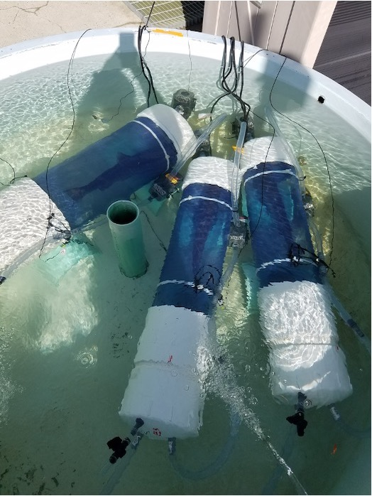

Female salmon suffer higher rates of en route mortality than males during their upriver migration. The Eliason lab has been exploring the drivers of this phenomenom. In 2017, I had the opportunity to travel to Cultus Lake in British Columbia, Canada, and participate in an ongoing project in the Eliason Lab on female-biased mortality in coho salmon. This work was led by Dr. Erika Eliason and was a large collaborative effort involving researcher’s from UBC, UCSB, Carlton University, and DFO. While we didn’t figure out exactly why the females were dying, we did learn a lot about coho salmon energetics, thermal sensitivity, swimming performance, and more! Here are some of the photos from the trip. Check out our papers below!

Relevant publications:
Alexander G. Little, Tanya S. Prystay, Emily A. Hardison, Terra Dressler, Krista Kraskura, Steven J. Cooke, David A. Patterson, Scott G. Hinch, Erika J. Eliason. (2022). Evaluating Cardiac Oxygen Limitation as a Mechanism for Female-Biased Mortality in Coho Salmon (Oncorhynchus kisutch). Canadian Journal of Zoology. https://doi.org/10.1139/cjz-2022-0072.
Krista Kraskura+, Emily A. Hardison+, Alexander G. Little, Terra Dressler, Tanya S. Prystay, Brian Hendriks, Tony P. Farrell, Steve J. Cooke, David A. Patterson, Scott G. Hinch, and Erika J. Eliason. (2021). Sex-specific differences in swimming, aerobic scope, and recovery from exercise in adult coho salmon (Oncorhynchus kisutch) across ecologically relevant temperatures. Conservation Physiology, 9(1), 1–22. https://doi.org/10.1093/conphys/coab016. +co-first author
Alexander G. Little, Emily Hardison, Krista Kraskura, Terra Dressler, Tanya Prystay, Brian Hendriks, Jonathon Pruitt, Tony P. Farrell, Steve J. Cooke, David Patterson, Scott G. Hinch, and Erika Eliason. (2020). Reduced lactate dehydrogenase activity in the heart and suppressed sex hormone levels are associated with female-biased mortality during thermal stress in Pacific salmon. Journal of Experimental Biology. doi: 10.1242/jeb.214841.
Alexander G. Little+, Terra Dressler+, Krista Kraskura, Emily Hardison, Tony P. Farrell, Scott J. Hinch, David A. Patterson, Erika J. Eliason. (2020). Maxed out: Optimizing accuracy, precision and power for field measures of maximum metabolic rate in fishes. Physiological and Biochemical Zoology. https://doi.org/10.1086/708673.